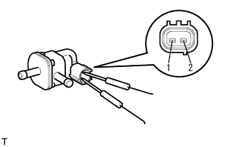

Vacuum Switching Valve Assembly (2GR-FE) Inspection |
| 1. Vacuum Switching Valve Assembly NO.1 |
Resistance Inspection
 |
Using SST (Toyota electrical tester), measure the resistance between the terminals.
| Tester Connection | Condition | Standard |
|---|---|---|
| 1 - 2 | 20°C | 23 to 26Ω |
Operation Check
Apply battery voltage between the terminals of the vacuum switching valve assembly No.1, and check for air flow between each port when the coil is energized and not energized.
| Energized Condition | Specified Condition |
|---|---|
| Energized | Air flows |
| Not energized | No air flow |